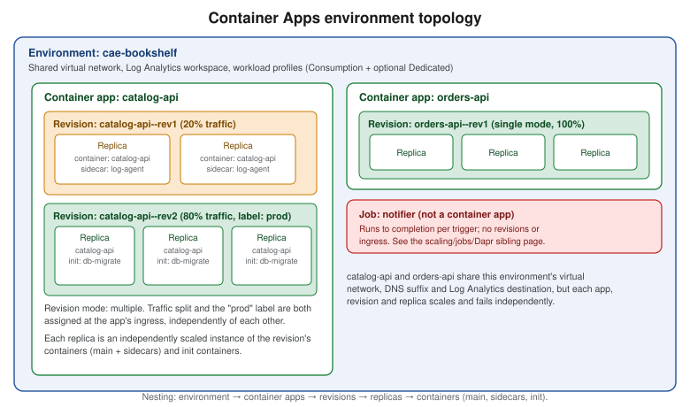

Container Apps
|
This content was generated with the assistance of AI and should be verified against the official documentation before being relied on in production. |
Examples on this page target Azure CLI 2.90.0 with the containerapp CLI extension at 1.3.0b5 — commands that
are still preview-only in that extension are called out explicitly; every other command shown is generally
available in CLI core. Azure Container Apps Express reached general availability on 2026-09-23 (checked
2026-09-26); re-verify all version and feature-availability claims on this page against
the Container Apps documentation before relying on them, since
this service ships new capabilities frequently.
This page walks through deploying Bookshelf’s catalog-api — a Java/Spring Boot HTTP service — to Azure
Container Apps end to end: the environment and app model, the three ways to get code running with a single az
containerapp up, ingress and custom domains, revisions and traffic splitting, and the pricing and
troubleshooting a reader needs before calling this "production ready." Scaling rules, Container Apps jobs and
Dapr are deliberately out of scope here; they are covered in depth on
Container Apps: Scaling, Jobs and Dapr. Whether Container Apps is even the right compute
choice for a given workload, versus App Service and Azure Functions or
AKS Clusters/Deploying Microservices on AKS, is covered on
Choosing a Compute Service.
Concepts: environment, app, revision, replica, container
Six terms recur throughout this page and the Azure CLI’s own flag names, nested in nesting order:
- Environment
-
A secure boundary around one or more container apps and jobs, backed by a shared virtual network, DNS suffix, and (for a standard environment) a Log Analytics workspace. Apps in the same environment can reach each other by name and share the same network and logging destination; apps that must never share compute or must be isolated by team/lifecycle go in separate environments. Bookshelf uses one environment,
cae-bookshelf, forcatalog-apiandorders-api. - App (container app)
-
One deployable unit — a name, a set of revisions, and the ingress/scaling/identity configuration that applies across all of them.
catalog-apiandorders-apiare each their own container app incae-bookshelf. - Revision
-
An immutable, versioned snapshot of an app’s
template(image, resources, scale rules, env vars). The first revision is created automatically on first deploy; every later change to the template creates a new one. A revision-scope change (image, resources, scale rules) creates a new revision; an application-scope change (secrets, ingress, revision mode) applies to every existing revision without creating a new one. - Replica
-
One running instance of a revision — the unit that actually scales in and out. A revision with
--min-replicas 2 --max-replicas 10can have anywhere from 2 to 10 replicas running at once, each independently scheduled and independently billed. - Container
-
A replica runs one or more containers: the main app container plus, in advanced scenarios, sidecar containers (sharing the replica’s disk and network, e.g. a log-forwarding agent next to
catalog-api) and init containers (run to completion, in array order, before the main container starts — e.g. a database-migration step ahead ofcatalog-api). Most container apps use a single container; reach for sidecars/init containers only when containers are genuinely tightly coupled, since the usual microservices pattern is one container app per service rather than one app with several containers.

Workload profiles: v2 vs. legacy Consumption-only, Consumption vs. Dedicated
Every Container Apps environment is one of two environment types:
| Type | What it means |
|---|---|
Workload profiles (v2) — the default |
Supports a Consumption workload profile (serverless, scale-to-zero, pay-per-use) and any number of Dedicated workload profiles (reserved VM-backed compute, sized by you) side by side in the same environment. Gives access to the fuller networking stack (firewall/NSG support, native private endpoints, user-defined routes). |
Consumption-only (v1) — legacy |
The older environment type: Consumption plan only, no Dedicated profiles, and a narrower set of networking features. It is no longer the default for new environments; Microsoft’s own guidance is that every new environment should be Workload profiles (v2), including one that only ever runs consumption workloads, because it gives the same consumption behavior plus room to add a Dedicated profile later without recreating the environment. |
Within a Workload profiles (v2) environment, every app runs on one of two plans, chosen per workload profile:
| Plan | Behavior |
|---|---|
Consumption |
Serverless: apps scale to zero, and billing is per-second resource consumption (see Pricing model). Every v2 environment gets exactly one Consumption profile automatically; it cannot be removed, and it costs nothing when unused. |
Dedicated |
Apps run on reserved virtual machine instances that you size (general purpose, memory-optimized, or GPU), sized and scaled per profile rather than per app. A Dedicated plan management fee applies to the environment as soon as it has one Dedicated workload profile, on top of the per-instance compute cost. |
catalog-api and orders-api both run on the environment’s default Consumption profile; cae-bookshelf never
needs a Dedicated profile in this scenario.
Managed VNet vs. custom (bring-your-own) VNet
Creating an environment without specifying a subnet provisions a managed virtual network for it automatically,
with a small, fixed set of network controls — adequate for cae-bookshelf’s public-facing APIs. Supplying
`--infrastructure-subnet-resource-id against an existing subnet instead gives fine-grained control: custom DNS,
network security groups, user-defined routes, and (with --internal-only true) an environment with no public
inbound IP at all, reachable only through an internal load balancer inside that VNet. Choose a custom VNet when
catalog-api must sit behind existing network security controls or peer with other Azure networks; the managed
VNet is the right default otherwise.
Container Apps Express vs. a standard environment
Container Apps Express is a separate, streamlined environment mode purpose-built for HTTP web apps and APIs: no
environment to size or network to configure up front, sub-second scale-from-zero, and a dedicated portal at
containerapps.azure.com. It trades that simplicity for a deliberately narrower
feature set — as of this writing it does not support custom domains, Key Vault secret references,
system-assigned managed identities, Dapr, Container Apps jobs, custom KEDA scale rules, multiple revisions and
traffic splitting, workload profiles, or GPU compute, and it only runs linux/amd64 HTTP workloads. It does
support internal or external HTTP ingress, virtual network egress, and user-assigned managed identities — both
for the app’s runtime calls and for pulling images from Azure Container Registry. Billing is
the same Consumption per-second model and free grant described in Pricing model, with no separate environment fee.
# Create an express environment (no subnet or profile sizing needed)
az containerapp env create \
--name cae-bookshelf-express \
--resource-group "$RG" \
--environment-mode express \
--logs-destination none
# Express supports user-assigned (not system-assigned) identities for image pulls;
# id-catalog-api holds AcrPull on $ACR as set up in the ACR section below
IDENTITY_ID=$(az identity show --name id-catalog-api --resource-group "$RG" --query id --output tsv)
az containerapp create \
--name catalog-api \
--resource-group "$RG" \
--environment cae-bookshelf-express \
--image "$ACR.azurecr.io/catalog-api:1.0.0" \
--user-assigned "$IDENTITY_ID" \
--registry-server "$ACR.azurecr.io" \
--registry-identity "$IDENTITY_ID" \
--target-port 8080 \
--ingress external \
--min-replicas 0 \
--max-replicas 3References: Azure Container Apps Express overview, Azure Container Apps Express FAQ, az containerapp create.
Pulling from ACR with a user-assigned identity (Pulling from ACR with managed identity) works the same way in Express, so that is not what
rules it out for Bookshelf. The blockers are elsewhere: catalog-api needs a custom domain (Custom domains and free managed certificates)
and Key Vault secret references (Identity and Access), notifier scales on a custom
Service Bus KEDA rule and runs as a Container Apps job, and the blue-green rollouts in Revision modes and traffic splitting rely on
multiple revisions and traffic splitting — none of which Express supports today. So the rest of this page builds cae-bookshelf as a standard Workload profiles (v2) environment. Reach for Express
instead when a workload is a plain HTTP app/API/prototype that does not need those features and where the fastest
possible cold start matters more than full configurability — and remember that an existing environment might be
selected for automatic migration to Express by Microsoft, with 25—30 days' notice and an opt-out, if its
detected feature usage is Express-compatible.
Creating the environment
In the Azure portal
-
Search for Container Apps Environments and select Create.
-
On the Basics tab, choose the subscription and
$RG, name the environmentcae-bookshelf, and pick the region. -
On the Workload profiles tab, keep the default Consumption profile; only add a Dedicated profile if a specific app needs reserved compute or GPU.
-
On the Networking tab, keep Use managed virtual network for the managed-VNet default, or select Use custom virtual network and pick an existing subnet for the custom-VNet path described above; toggle Internal if the environment must have no public inbound IP.
-
On the Monitoring tab, keep the default new Log Analytics workspace (or point at an existing one).
-
Select Review + create, then Create.
With the Azure CLI
export RG=rg-bookshelf
export LOCATION=eastus2
export ACR=acrbookshelf
export ENV=cae-bookshelf
export APP=catalog-api
az group create --name "$RG" --location "$LOCATION"
az extension add --name containerapp --upgrade
az provider register --namespace Microsoft.App
az provider register --namespace Microsoft.OperationalInsights
# Standard, managed-VNet Workload profiles (v2) environment with the default Consumption profile
az containerapp env create \
--name "$ENV" \
--resource-group "$RG" \
--location "$LOCATION"Deploying with az containerapp up
az containerapp up is a single command that creates whatever it needs (resource group, registry, environment,
Log Analytics workspace, app) and works three ways.
From an existing image
az containerapp up \
--name "$APP" \
--resource-group "$RG" \
--environment "$ENV" \
--image "$ACR.azurecr.io/catalog-api:1.0.0" \
--ingress external \
--target-port 8080From local source (--source ., cloud build to ACR)
Run from catalog-api’s own project directory. With a `Dockerfile present, up builds from it (and, if the
Dockerfile has an EXPOSE instruction, infers --ingress/--target-port from it); without one, it uses Azure’s
cloud build (Buildpacks) for supported stacks, which includes Java.
az containerapp up \
--name "$APP" \
--resource-group "$RG" \
--environment "$ENV" \
--source . \
--ingress external \
--target-port 8080This builds the image, pushes it to a Container Registry (creating one if --registry-server isn’t given — see
Azure Container Registry for a dedicated, pre-existing $ACR instead), and deploys the app. If
the command hangs waiting on the build agent, re-running it is the documented workaround for a known transient
build-agent error; add --debug for more detail on any other failure.
From a GitHub repository (--repo, generated GitHub Actions workflow)
az containerapp up \
--name "$APP" \
--resource-group "$RG" \
--environment "$ENV" \
--repo "https://github.com/<org>/bookshelf-catalog-api" \
--ingress external \
--target-port 8080This path requires a Dockerfile in the repository, creates (or reuses) a service principal to let the generated
workflow deploy on Azure’s behalf, and commits a GitHub Actions workflow file that rebuilds and redeploys on every
push. Because rerunning up this way creates another workflow, redeploy by pushing to the repository afterward,
not by rerunning the command; edit the generated workflow file directly for anything beyond its defaults. If
Bookshelf already manages CI/CD with workload identity federation (see Identity and Access),
pass an existing service principal explicitly instead of letting up create one:
az containerapp up \
--name "$APP" \
--resource-group "$RG" \
--environment "$ENV" \
--repo "https://github.com/<org>/bookshelf-catalog-api" \
--service-principal-client-id "$SP_CLIENT_ID" \
--service-principal-client-secret "$SP_CLIENT_SECRET" \
--service-principal-tenant-id "$TENANT_ID" \
--ingress external \
--target-port 8080up intentionally only sets a handful of defaults (image, ingress, target port). Anything past that — Dapr,
scaling rules, secrets, transport protocol — is configured afterward with az containerapp update and the other
az containerapp subcommands used throughout the rest of this page; up is not a synonym for update, and
rerunning it against the same --resource-group/--environment redeploys rather than reconfigures.
az containerapp create / update / show / logs show / exec
The lower-level commands up wraps, used directly whenever more control is needed than `up’s defaults give:
# Create explicitly (equivalent building blocks that `up` assembles for you)
az containerapp create \
--name "$APP" \
--resource-group "$RG" \
--environment "$ENV" \
--image "$ACR.azurecr.io/catalog-api:1.0.0" \
--target-port 8080 \
--ingress external \
--cpu 0.5 --memory 1.0Gi \
--min-replicas 1 --max-replicas 3
# Update settings on an existing app (creates a new revision if any changed setting is revision-scope)
az containerapp update \
--name "$APP" \
--resource-group "$RG" \
--image "$ACR.azurecr.io/catalog-api:1.1.0" \
--cpu 1.0 --memory 2.0Gi \
--min-replicas 2 --max-replicas 5
# Inspect the app's current configuration
az containerapp show --name "$APP" --resource-group "$RG" --output yaml
# Stream console logs (last 50 lines, following)
az containerapp logs show \
--name "$APP" \
--resource-group "$RG" \
--type console \
--tail 50 \
--follow
# Open an interactive shell in a running replica, for interactive debugging
az containerapp exec --name "$APP" --resource-group "$RG"CPU and memory combinations
On the Consumption plan, the total vCPU and memory allocated across every container in a replica must add up to
one of a fixed table of pairs — 0.25 vCPU with 0.5 GiB up to 4.0 vCPU with 8.0 GiB, in matching 0.25 vCPU / 0.5
GiB steps (0.5/1.0, 0.75/1.5, 1.0/2.0, and so on); a Consumption-only (legacy v1) environment additionally caps
this at 2.0 vCPU / 4.0 GiB. Set it with --cpu/--memory on create/update as shown above; a Dedicated
workload profile instead lets catalog-api request any size the profile’s own VM SKU can accommodate.
References: Containers in Azure Container Apps.
The portal flow: Basics, Container, Ingress, and the blades after create
In the Azure portal
-
Search for Container Apps and select Create.
-
Basics: subscription,
$RG, container app namecatalog-api, region, and the Container Apps Environment (cae-bookshelf, created above or created inline here). -
Container: Image source — Azure Container Registry (pick
$ACRand thecatalog-apirepository/tag), Docker Hub or other registries, or Quickstart image for a placeholder; set CPU and memory to one of the combinations above. -
Ingress: enable ingress, choose Accepting traffic from anywhere (external) or Limited to Container Apps Environment (internal), set Target port to
8080, and leave Ingress type as HTTP unless a raw TCP protocol is needed. -
Review + create, then Create.
-
Once created, the app’s own blade exposes further settings as separate left-navigation entries, each covered below or on the sibling scaling/jobs/Dapr page: Scale (min/max replicas and scale rules — Container Apps: Scaling, Jobs and Dapr), Secrets (name/value pairs referenced from
env— see Key Vault and Secrets and Runtime Configuration for how Bookshelf actually sources these), Identity (system-/user-assigned managed identity — Identity and Access), Custom domains (Custom domains and free managed certificates), and Revisions (Revision modes and traffic splitting).
Ingress
External vs. internal, target port, transport
Two settings, at two different levels, determine reachability:
-
The environment’s accessibility level (fixed at creation: public, or
--internal-only truefor no public inbound IP at all). -
The app’s own ingress visibility —
external(published at whichever boundary the environment has: the public internet on a public environment, the internal load balancer on an internal one) orinternal(reachable only from other apps in the same environment).
az containerapp ingress enable \
--name "$APP" \
--resource-group "$RG" \
--type external \
--target-port 8080 \
--transport auto--transport accepts auto (the default — negotiates HTTP/1.1 or HTTP/2 automatically, also covering
WebSocket and gRPC), http, http2, or tcp for a non-HTTP protocol. --target-port must match the port
catalog-api’s embedded Tomcat/Netty server actually listens on (`server.port in Spring Boot).
IP restrictions, CORS, session affinity
# Allow only Bookshelf's office network; every other source is denied
az containerapp ingress access-restriction set \
--name "$APP" \
--resource-group "$RG" \
--rule-name allow-office \
--ip-address 203.0.113.0/24 \
--action Allow
# Enable CORS for the Bookshelf web front end
az containerapp ingress cors enable \
--name "$APP" \
--resource-group "$RG" \
--allowed-origins "https://shop.bookshelf.example" \
--allowed-methods "GET,POST" \
--allowed-headers "*"
# Sticky sessions: pin a client to the replica that handled its first request
az containerapp ingress sticky-sessions set \
--name "$APP" \
--resource-group "$RG" \
--affinity stickySession affinity and CORS only apply to the app’s main HTTP ingress port, not to any additional TCP ports; IP restrictions accept both allow and deny rules evaluated in order, with an implicit deny-all once at least one allow rule exists.
Custom domains and free managed certificates
Container Apps issues and auto-renews a free TLS certificate for a custom domain, provided the app stays publicly reachable from ingress and the DNS records below stay in place.
| Domain type | Record type | What it points to |
|---|---|---|
Apex ( |
|
The environment’s static IP ( |
Subdomain ( |
|
The app’s generated FQDN ( |
Either way, a TXT record at asuid (apex) or asuid.<subdomain> (subdomain) holding the app’s domain
verification ID is required to prove ownership.
In the Azure portal
-
Open
catalog-api→ Networking → Custom domains → Add custom domain. -
Choose Managed certificate, enter the domain, and select the matching Hostname record type (A or CNAME).
-
Create the DNS records shown in the Domain validation section with Bookshelf’s DNS provider, then select Validate and Add.
With the Azure CLI
export DOMAIN=api.bookshelf.example
# Domain verification ID and the value the CNAME/A record must point to
az containerapp show --name "$APP" --resource-group "$RG" \
--query properties.customDomainVerificationId --output tsv
az containerapp show --name "$APP" --resource-group "$RG" \
--query properties.configuration.ingress.fqdn --output tsv
# After the DNS records above are in place:
az containerapp hostname add \
--hostname "$DOMAIN" \
--resource-group "$RG" \
--name "$APP"
az containerapp hostname bind \
--hostname "$DOMAIN" \
--resource-group "$RG" \
--name "$APP" \
--environment "$ENV" \
--validation-method CNAMEUse --validation-method HTTP instead of CNAME for an apex domain (A record). Binding can take several
minutes while the certificate is issued; the app must stay in a running state throughout, or the domain-ownership
challenge fails with a timeout.
Revision modes and traffic splitting
A revision is immutable and versioned; a revision-scope change (image, resources, scale rules) always creates a new one, while an application-scope change (secrets, ingress, revision mode itself) applies across every existing revision without creating one. Three revision modes govern how many revisions can be active for traffic at once and how traffic reaches them:
- Single (default)
-
One active revision at a time. A new revision only takes over traffic once it has provisioned, scaled to the previous revision’s replica count, and passed its startup/readiness probes — so deploys are zero-downtime, and a failed new revision simply never receives traffic.
- Multiple
-
More than one revision can be active simultaneously, with the app’s ingress splitting traffic between them by percentage (traffic splitting) and/or exposing a fixed, stable URL per revision label that can be moved between revisions independent of the percentage split. Revision labels (
az containerapp revision label add) are GA and are most useful in this mode. - Labels (deployment labels, preview)
-
A separate third mode where named labels such as
stageandprod— rather than individual revisions — are the unit you deploy to and route by. Each new revision is created for a target label, traffic is split between labels, promoting a release means pointingprodat the revisionstagealready runs, any revision no longer referenced by a label is shut down automatically, and each label keeps a history that makes rollback a matter of pointing it back at an earlier revision.
Switching modes and splitting traffic
# Switch to multiple revision mode (an application-scope change: no new revision is created)
az containerapp revision set-mode --name "$APP" --resource-group "$RG" --mode multiple
# List active revisions and their current traffic weight
az containerapp revision list --name "$APP" --resource-group "$RG" --output table
# Split traffic 80/20 between the latest revision and a named earlier one
az containerapp ingress traffic set \
--name "$APP" \
--resource-group "$RG" \
--revision-weight latest=80 catalog-api--rev1=20
# Blue/green cutover: move 100% of traffic to the new revision once validated
az containerapp ingress traffic set \
--name "$APP" \
--resource-group "$RG" \
--revision-weight latest=100
# Revision label (GA, multiple mode): give a revision a stable, percentage-independent URL
az containerapp revision label add \
--name "$APP" \
--resource-group "$RG" \
--revision catalog-api--rev2 \
--label prodA label’s URL stays the same as the label is moved between revisions, and labels work independently of the
percentage split — Bookshelf can point a canary label at a brand-new revision for a specific test audience
while the app’s main traffic split is still 100% on the previous one.
Deployment labels mode (preview)
In the Azure portal
-
Open
catalog-apiand, under Application, select Revisions and replicas. -
Select Deployment mode, choose Deployment labels, and select Apply. Container Apps creates a first label named
label-1. -
Under Application, select Labels → New label, pick the label to base it on, name it (for example
stage), and select Duplicate. -
Use Show history on a label to review which revisions it pointed to, and point it back at an earlier revision to roll back.
With the Azure CLI
Labels mode needs the containerapp extension (the core CLI’s revision set-mode only accepts single and
multiple):
az extension add --name containerapp --upgrade --allow-preview true
# Switch catalog-api to labels mode; new revisions go to the stage label by default
az containerapp revision set-mode --name "$APP" --resource-group "$RG" --mode labels --target-label stage
# Deploy a new image as a new revision behind the stage label
az containerapp update \
--name "$APP" \
--resource-group "$RG" \
--image "$ACR.azurecr.io/catalog-api:1.1.0" \
--target-label stage
# Promote: point the prod label at the revision stage is running
az containerapp revision label add \
--name "$APP" \
--resource-group "$RG" \
--revision catalog-api--rev3 \
--label prod
# Inspect a label's history (for rollback) and the current traffic per label
az containerapp label-history show --name "$APP" --resource-group "$RG" --label prod
az containerapp ingress traffic show --name "$APP" --resource-group "$RG"Pulling from ACR with managed identity
catalog-api pulls its image from $ACR using a user-assigned managed identity rather than the registry’s
admin username/password, following the same pattern as every other Bookshelf-to-Azure credential covered on
Identity and Access:
az identity create --name id-catalog-api --resource-group "$RG" --location "$LOCATION"
IDENTITY_ID=$(az identity show --name id-catalog-api --resource-group "$RG" --query id --output tsv)
IDENTITY_PRINCIPAL_ID=$(az identity show --name id-catalog-api --resource-group "$RG" --query principalId --output tsv)
ACR_ID=$(az acr show --name "$ACR" --resource-group "$RG" --query id --output tsv)
az role assignment create \
--assignee-object-id "$IDENTITY_PRINCIPAL_ID" \
--assignee-principal-type ServicePrincipal \
--role AcrPull \
--scope "$ACR_ID"
az containerapp identity assign \
--name "$APP" \
--resource-group "$RG" \
--user-assigned "$IDENTITY_ID"
az containerapp registry set \
--name "$APP" \
--resource-group "$RG" \
--server "$ACR.azurecr.io" \
--identity "$IDENTITY_ID"Logs in Log Analytics
A standard environment sends every app’s stdout/stderr, scaling events, Dapr sidecar logs (when Dapr is
enabled) and system-level events to one shared Log Analytics workspace, queryable with the same Kusto Query
Language used throughout Azure Monitor:
az monitor log-analytics query \
--workspace "$(az containerapp env show --name "$ENV" --resource-group "$RG" --query properties.appLogsConfiguration.logAnalyticsConfiguration.customerId --output tsv)" \
--analytics-query "ContainerAppConsoleLogs_CL | where ContainerAppName_s == 'catalog-api' | order by TimeGenerated desc | take 50"Pricing model
On the Consumption plan, billing has two components. Resource consumption is metered in vCPU-seconds and
GiB-seconds — the vCPU and memory actually allocated to running replicas, per second — with the first 180,000
vCPU-seconds and 360,000 GiB-seconds free each calendar month, per subscription. Requests are metered separately,
with the first 2 million HTTP requests free each calendar month per subscription (health-probe traffic doesn’t
count); a scaled-to-zero revision incurs no resource charges at all. A replica that is running but genuinely
idle — fully started, no in-flight requests, under roughly 0.01 vCPU and 1,000 bytes/second of network
traffic — bills at a reduced idle rate rather than the active rate, which matters for catalog-api configured
with --min-replicas greater than zero for fast cold-start avoidance. On the Dedicated plan, billing is a fixed
monthly Dedicated plan management fee for the environment (charged only once at least one Dedicated workload
profile exists) plus a variable per-instance cost that scales with the profile’s allocated vCPU/RAM and instance
count. Exact current per-unit rates and free-grant amounts vary by currency and region and are published at
the Container Apps pricing page; treat any specific
number here as indicative, not contractual.
References: Billing in Azure Container Apps, Azure Container Apps pricing.
Troubleshooting
A revision stuck with a Provisioning status and a Processing running status indefinitely, or one that takes
more than ten minutes to reach Provisioned but ends up Degraded with "0/1 replicas ready," is almost always a
health-probe misconfiguration — the default liveness/readiness/startup probes hit the ingress target port over
TCP, so a Java app with a slow Spring context startup typically needs a longer probe initial delay rather than
a genuine fix to the app itself. A deploy that fails outright is usually an image-pull failure: confirm the
managed identity has AcrPull on $ACR (Pulling from ACR with managed identity), or that the environment’s outbound network path/DNS can
reach the registry if a custom VNet is in play. System-level events — as opposed to the app’s own console
output — surface with:
az containerapp logs show --name "$APP" --resource-group "$RG" --type system --tail 50A revision that never receives traffic despite looking healthy is, in multiple revision mode, almost always a
traffic-splitting weight that never got updated after the new revision was created — check with az containerapp
ingress traffic show. Requests to an internal environment that return HTTP 404 with "Container App is stopped or
does not exist," even though the replica is healthy and TLS succeeds, mean the app’s own ingress visibility is set
to internal rather than external; on an internal environment, external app ingress still doesn’t reach the
public internet; it only reaches the environment’s internal load balancer. Finally, a Container Apps environment
left idle (no running apps or jobs) or stuck in a failed state (typically a broken VNet or Azure Policy
configuration) for more than 90 continuous days is automatically deleted by the platform — a caveat to keep in
mind for a demo or staging environment left running unattended, not a substitute for the explicit cleanup below.
Clean up
az group delete --name "$RG" --yes --no-waitThis removes cae-bookshelf, catalog-api, orders-api, and every other resource created in $RG on this
page. As noted above, an idle or failed environment is eventually deleted automatically after 90 days, but that
is a platform safety net, not a reason to skip deleting a demo resource group deliberately once it’s no longer
needed.
References
-
Microsoft Learn — Compute and billing structures in Azure Container Apps
-
Microsoft Learn — Provide a virtual network to an Azure Container Apps environment
-
Microsoft Learn — Deploy Azure Container Apps with the az containerapp up command
-
Microsoft Learn — Build and deploy from source code to Azure Container Apps
-
Microsoft Learn — Configure ingress for an app in Azure Container Apps
-
Microsoft Learn — Configure IP restrictions in Azure Container Apps
-
Microsoft Learn — Configure session affinity in Azure Container Apps
-
Microsoft Learn — Custom domain names and free managed certificates in Container Apps
-
Microsoft Learn — Blue-green deployment in Azure Container Apps
-
Microsoft Learn — az containerapp ingress traffic command reference
-
Microsoft Learn — Managed identities in Azure Container Apps
-
Microsoft Learn — Log storage and monitoring in Azure Container Apps